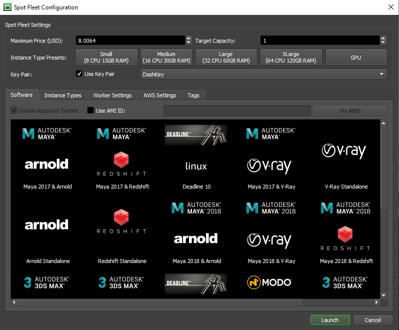
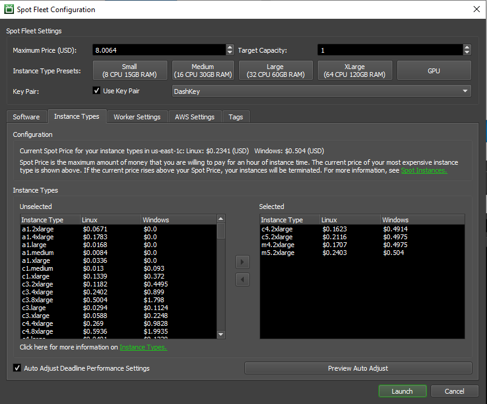
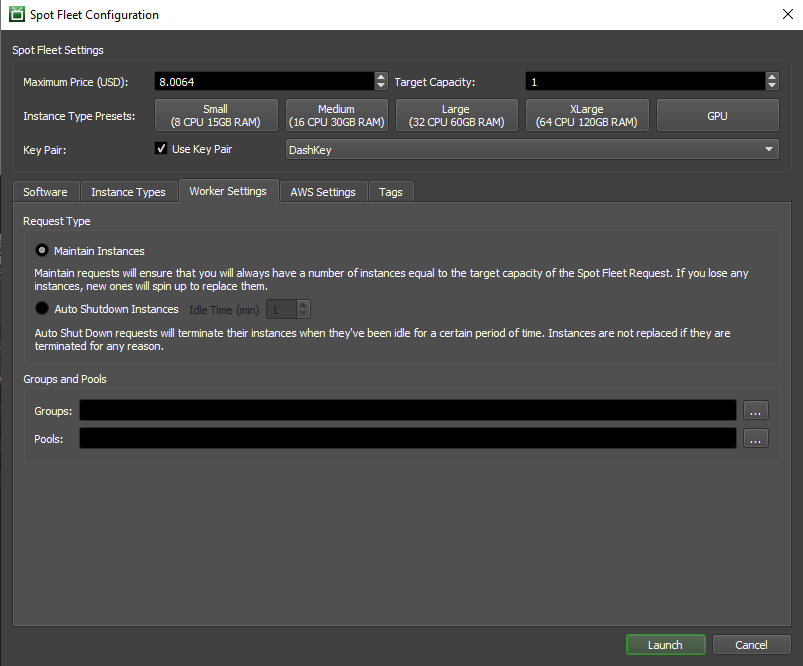
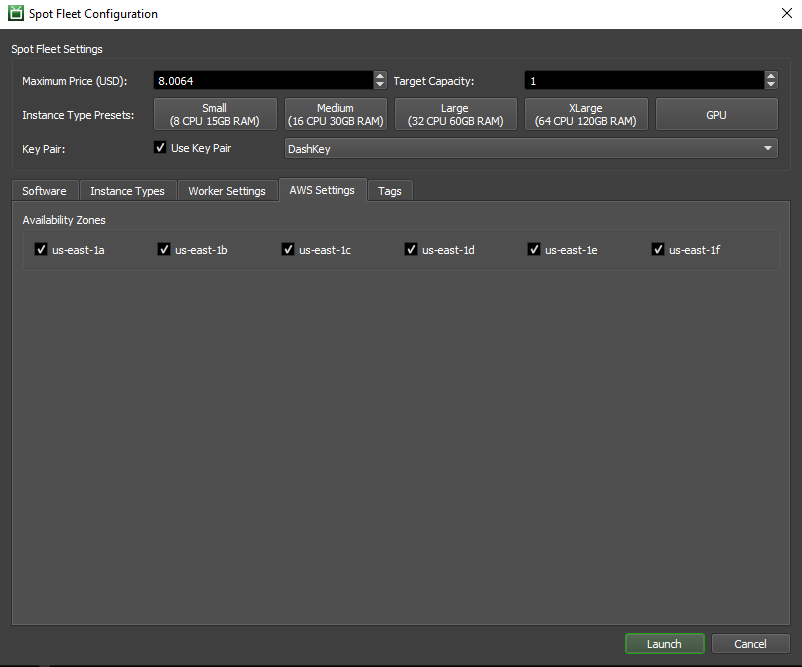
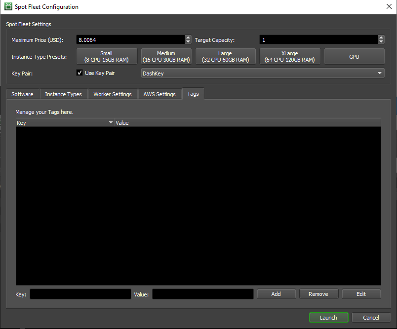

Note
While AWS Portal can enable cloud rendering in Deadline 10, AWS Deadline Cloud is a newer offering that has been built specifically for the cloud. It is a fully managed service that does not require installation or maintenance of infrastructure (e.g., repository, database, or license server). Worker fleet auto-scaling, asset synching, and licensing are all managed natively within AWS by Deadline Cloud. See here for more information on Deadline Cloud and its capabilities.
3. AWS Portal Spot Fleet¶
3.1. Overview¶
AWS Portal Spot Fleets are used to acquire and manage your render nodes on AWS. Launching a Spot Fleet is required to render with AWS Portal. Step by step instructions on launching a Spot Fleet with AWS Portal can be found here. On this page, we will go through the various pieces that are configurable in a Deadline AWS Portal Spot Fleet, as well as some general information AWS EC2 Spot.
You can find more information about AWS Portal in general here.
Note
You will need a running instance of the Deadline Remote Connection Server to launch a Spot Fleet. You can find more information on the Deadline RCS here.
Note
You will need to have a working Deadline AWS Portal infrastructure running in order to launch a Spot Fleet. You can find more information on AWS Portal infrastructures and launching them here
3.1.1. AWS EC2 Spot¶
AWS Portal uses Spot Fleets to fulfil your cloud rendering needs. AWS EC2 Spot instances allow you to use AWS hardware at a reduced price because they consist of machines that are not currently being used by On-Demand customers and they can be interrupted. Deadline has chosen to use Spot for our AWS Portal cloud instances because of the major cost savings it allows for our customers when rendering in the cloud. You can find more information on AWS Spot and Spot Fleets here.
The Spot instances that are launched will be used to run the Deadline Worker, which in turn will facilitate your cloud rendering. Once your fleet has been fulfilled, your Workers should appear in the Worker List after a short amount of time and then you are ready to render with AWS Portal.
3.2. Spot Fleet Configuration Dialog¶
The Spot Fleet Configuration Dialog is where you can adjust all aspects of the Spot Fleet you are about to create. A detailed description of the contents of this dialog can be found bellow.
3.3. Software Tab and General Settings¶
This is the main tab you will see when creating a Spot Fleet with Deadline AWS Portal. It has options for setting your max price, target capacity, instance type preset you want, and the software you want to appear on your instance. Generally, when creating a fleet of render nodes this is the page that you will be using the most.
3.3.1. General Settings¶
Maximum Price: This is the maximum price you will want to pay for an instance. You can find more information about pricing here.
Target Capacity: The target number of instances you want your fleet to have. The number of instances actually launched might be differ from your requested number based on availability. You are only charged for instances that are actually assigned to you.
Instance Type Presets: A collection of instance types that have been grouped together to make selecting the right size easier. Fine grain control of which instances are permitted in your fleet can be achieved through the Instance Type Tab. For can find more information about AWS EC2 instance types here.
Key Pair: The SSH key pair you want to use for your instances. The key is required if you want to remotely access your instances from an SSH client once they have launched. We recommend leaving the default settings and using the DashKey. You can learn more about the DashKey here.
3.3.2. Software Tab¶
Use AMI ID: Check this box if you would like to use a custom AMI. Once checked, you can enter the AMI ID in the text field that will become enabled. You can learn more about creating custom AWS AMIs here.
My AMIs: Opens a dialog containing a drop down menu of the AMIs associated with your AWS account.
Software Selection View: Select an item in the view to select an AMI with the pre-bundled software that you want to use. You can learn about the available software packages here.
3.4. Instance Type Tab¶
The Instance Type tab lets you have finer grain control over which EC2 instance types will be allowed in your Spot Fleet. Using the left and right arrow buttons, you can add or remove instance types that will be obtained by your Spot Fleet. The price that is beside the instance type reflects the cost per hour of compute time for that instance type. More information on AWS EC2 instance types can be found here. More information on AWS Spot pricing can be found here.
Instance Types: The AWS instance types in the Unlselected left box are types that will not be in your Spot Fleet. The instance types in the Selected right box are ones that are permitted to be in your Spot Fleet. Your fleet will contain a mix of the instance types selected depending on availability and price.
Auto Adjust Deadline Performance Settings: Check this if you want Deadline to automatically the performance settings of your render farm. You can learn more about Deadline Repository Performance Settings here.
3.5. Worker Settings Tab¶
The Worker Settings tab allows you to configure some settings for the Deadline Workers that will exist on your Spot Fleet instances. You can configure the auto shutdown settings for the instance, as well as other Deadline render farm management features.
Request Type: Select whether you want your instances to be Maintain Instances or Auto Shutdown Instances. Maintain instances will attempt to keep your fleet at the specified target account by launching another instance if one gets terminated for any reason. Auto Shutdown will terminate an instance if they have been idle for a specified amount of time the is selected with the number picker. These instances will not be replenished if terminated for any reason.
Groups and Pools: Select the Groups and Pools you want your Workers to be a part of by clicking on the … button. A dialog will pop up that will allow you to manage your pools or groups respectively. You can learn more about Pools and Groups here.
Note: Automatic Pools & Groups assignment requires that the AWS Portal Event Plugin be enabled.
3.6. AWS Settings Tab¶
The AWS Settings tab lets you adjust AWS specific settings of your Spot Fleet. Currently, this is just choosing which AWS Availability Zones you want your instances to come from. You can learn more about AWS Availability Zones here.
Availability Zones: Check or un-check the availability zones that you want to use for your Spot Fleet.
3.7. Tags Tab¶
The Tags tab allows you to add your own meta data to the resources acquired by your Spot Fleet. This is used to aid in the management of your fleet/resources. Tags can be very useful for cost allocation in billing. You can learn more about tags here and costs here.
Tag List: This is the list of tags that you currently have assigned to your Spot Fleet. You can select a row to Remove or Edit the entry.
Key and Value Fields: Enter in the key and value you want for a new tag in these text boxes.
Add: Adds the text that is currently in the Key and Value text fields when clicked.
Remove: Removes the currently selected tag key/value pair in the Tag List.
Edit: Opens a dialog that will allow you to edit the key and value fields of the currently selected key/value pair in the Tag List.
3.8. DashKey and AWS Key Pairs¶
The Key Pair field allows you to select an Amazon EC2 Key Pair to be added to your render nodes. This allows you to use an SSH client to log into your render nodes for debugging purposes. Using a key pair is completely optional.
Because render nodes do not have a public IP address, you will first need to use an SSH client to connect to your infrastructure, and then you can use an SSH client installed on the infrastructure to connect to the render node. In order to use SSH to access the render node from the infrastructure you will need to transfer the private key of the key pair you are using to the infrastructure. More information on this work flow can be found here.
To show up in the drop down, the key pair must have been created in the AWS region which your infrastructure was created in. Alternatively you can select the DashKey which is the key used by your infrastructure itself. The private key file for the DashKey is located in the installation directory of AWSPortalLink. If you select DashKey It will be added as an EC2 Key Pair in the region your infrastructure is located in when you start your render nodes. If you don’t wish to associate a key pair with your render nodes, you can un-select the “Use Key Pair” check box.
More information on how to create Amazon EC2 Key Pairs can be found here.